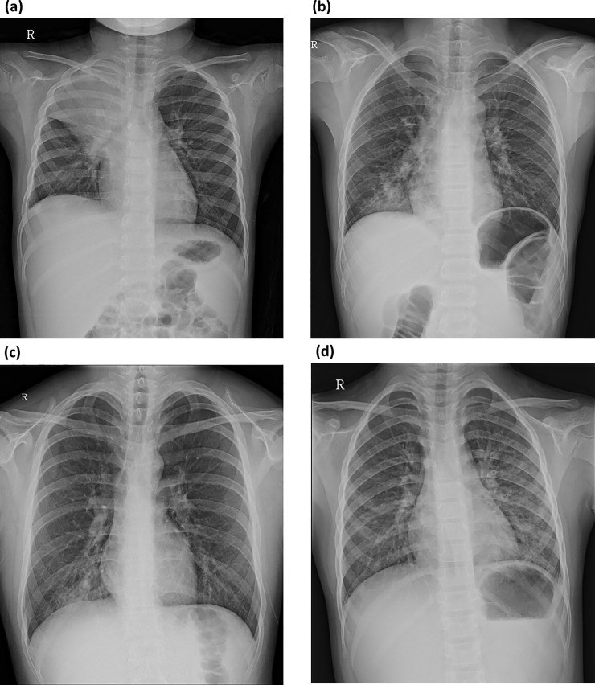
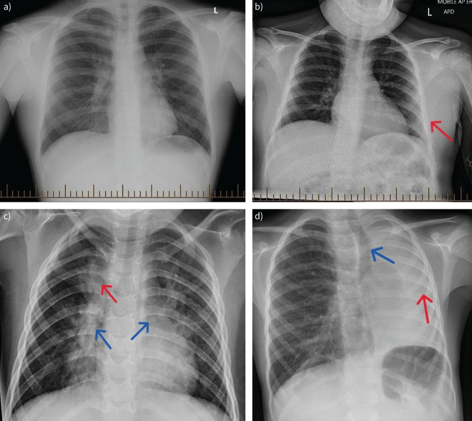

6156 — Viêm phổi do Mycoplasma pneumoniae ở trẻ dưới 3 tuổi: vì sao mẫu hình khác trẻ lớn / M. pneumoniae pneumonia in infants and toddlers
Tags: pattern:viem-tieu-phe-quan pattern:thamn-nhiem-ke pattern:xep-phoi pattern:dong-dac vung:phoi vung:phe-quan protocol:X-quang-nguc protocol:CT-nguc-lieu-thap protocol:sieu-am-phoi score:WHO
Mức chắc chắn (certainty): tổng hợp y văn (literature synthesis) — số liệu từ 674 trẻ viêm tiểu phế quản (Suzhou, PMC4297954), 79 nhũ nhi viêm tiểu phế quản do MP (Foshan, PMC7845151), 746 trẻ xét nghiệm MP (Đan Mạch, PMC5919654), 504 trẻ mầm non nhập viện vì MPP (2026, PMC13342035), 569 nhũ nhi MPP có khảo sát ho khò khè (2026, PMC13685289), 402 trẻ MPP có định type kháng macrolide (2026, PMC13670555), 155 trẻ hoại tử phổi do MP (2025, PMC11794862) và 66 trẻ < 2 tuổi có CMV trong BALF (2026, PMC13700219). Không có thử nghiệm ngẫu nhiên ở riêng nhóm < 3 tuổi; các ngưỡng điều trị là đồng thuận, chỗ suy luận được ghi rõ.
Câu chốt: ở trẻ < 3 tuổi, M. pneumoniae không hiếm như sách cũ dạy, nhưng biểu hiện không giống trẻ lớn: (1) MP gây 17,2% các ca viêm tiểu phế quản nhập viện (674 trẻ, PCR), tuổi trung vị 10 tháng, và 66,4% có thâm nhiễm kẽ trên X-quang (PMC4297954); (2) tỷ lệ xét nghiệm MP dương chỉ 4% ở trẻ < 2 tuổi so với 30% ở 2–6 tuổi và 65% ở ≥ 7 tuổi — nghĩa là xét nghiệm dương ở nhũ nhi có giá trị cao hơn, còn âm tính không loại trừ (PMC5919654); (3) dưới 3 tuổi, đồng nhiễm vi rút làm bệnh nặng hơn rõ: ở trẻ < 2 tuổi, đồng nhiễm khiến tỷ lệ bệnh nặng 29,7% vs 9,5% (PMC13342035).
1. Tổng quan bệnh học – cơ chế hình ảnh (TẠI SAO mẫu hình khác trẻ lớn)
1.1 Vì sao M. pneumoniae gây bệnh ở đường thở nhỏ
- M. pneumoniae không có thành tế bào → mọi beta-lactam vô hiệu; thuốc tác dụng là macrolide, tetracycline, fluoroquinolone.
- Vi khuẩn bám vào tế bào biểu mô có lông chuyển bằng protein P1, gây tê liệt lông chuyển, tiết hydrogen peroxide và độc tố → tổn thương biểu mô, phù, ứ nhầy. Vì vậy bệnh bắt đầu ở phế quản – tiểu phế quản rồi mới lan ra phế nang.
- TẠI SAO trẻ nhỏ lại "viêm tiểu phế quản" mà trẻ lớn lại "đông đặc": sức cản đường thở theo định luật Poiseuille, R ∝ 1/r⁴ — đường kính tiểu phế quản ở nhũ nhi nhỏ hơn nhiều lần, nên cùng một lượng nhầy/phù niêm mạc gây tắc gần hoàn toàn ở trẻ nhỏ trong khi trẻ lớn chỉ bị hẹp. Kèm theo: ít phế nang dự trữ, thông khí bàng hệ (pores of Kohn) chưa phát triển, lồng ngực mềm → tổn thương biểu hiện thành ứ khí + xẹp phổi từng thùy, chứ không thành đông đặc thùy lớn.
- TẠI SAO X-quang nhũ nhi khó đọc: phim AP nằm ngửa, pha thở ra, tuyến ức che trung thất trên, và mờ do giảm thể tích dễ bị gọi là "đông đặc". Đây là lý do một đám mờ ở nhũ nhi không đồng nghĩa viêm phổi thùy.
1.2 Vật lý hình ảnh: mỗi mẫu hình tương ứng một mức tổn thương
- Dày thành phế quản/quanh phế quản (peribronchial cuffing): phù niêm mạc + dịch quanh phế quản → đường mờ song song (tram-track) hoặc vòng (ring) trên X-quang; trên CT là dày thành phế quản ≥ 1 mm và nốt trung tâm tiểu thùy.
- Thâm nhiễm kẽ (interstitial infiltration): phù/tế bào ở vách tiểu thùy và quanh mạch → lưới mờ, nốt mờ nhỏ; đây là mẫu hình chiếm 66,4% ở nhũ nhi (PMC4297954) và 21% ở trẻ lớn hơn (PMC6713385).
- Xẹp phổi (atelectasis): tắc phế quản do nhầy + giảm thông khí → mờ hình nêm, co kéo rãnh liên thùy, dịch chuyển trung thất cùng bên; dấu "phế quản hơi trong vùng mờ" giúp phân biệt với đông đặc.
- Đông đặc (consolidation): phế nang đầy dịch/tế bào → mờ đồng nhất + phế quản hơi; ở trẻ lớn chiếm 37% (PMC6713385), ở nhũ nhi ít hơn và thường khu trú một thùy.
- Tràn dịch màng phổi: gặp 63% ở nhóm có đông đặc so với 16% ở nhóm không đông đặc (PMC6713385) — tràn dịch là dấu đi kèm đông đặc, không phải dấu của viêm tiểu phế quản.
- TẠI SAO CT thấy nhiều hơn: CT lát mỏng 1 mm, liều thấp phát hiện nốt trung tâm tiểu thùy, tree-in-bud, bã nhầy, hoại tử/hang, giãn phế quản sớm — những tổn thương dưới ngưỡng X-quang. Không dùng CT thường quy; chỉ khi nghi biến chứng hoặc chẩn đoán chưa rõ.
1.3 Dịch tễ và ngưỡng định lượng
- Tỷ lệ MP trong viêm tiểu phế quản nhập viện: 17,2% (117/674; PCR) ở Tô Châu 2010–2012, ổn định qua 3 năm (16,6 – 17,8 – 17,2%), đỉnh tháng 7–9, tuổi trung vị 10 tháng (PMC4297954).
- Xác nhận thứ hai: 79 nhũ nhi ở Phật Sơn, tỷ lệ phát hiện MP theo năm 19,2% – 21,3% – 24,0%, đỉnh tháng 6–7, chủ yếu 6–12 tháng (PMC7845151).
- Theo tuổi (Đan Mạch, 746 trẻ): dương tính 4% ở < 2 tuổi, 30% ở 2–6 tuổi, 65% ở ≥ 7 tuổi; đồng nhiễm vi rút 27% (PMC5919654).
- Ở trẻ mầm non nhập viện (504 ca): đồng nhiễm vi rút 38,3%, cao nhất 47,1% ở 2–4 tuổi; ở < 2 tuổi, đồng nhiễm làm tăng bệnh nặng 29,7% vs 9,5% (P = 0,046) (PMC13342035).
- CMV ở trẻ < 2 tuổi: 28/66 trẻ MPP có CMV DNA trong BALF; nhóm này sốt ≥ 3 ngày nhiều hơn, nặng hơn lúc nhập viện, nằm viện lâu hơn, nhưng ít khò khè hơn (PMC13700219).
- Kháng macrolide: đột biến A2063G chiếm 90,0% (362/402) ở trẻ nhập viện; đông đặc phổi 25,6% và ít gặp hơn ở nhóm A2063G (23,2% vs 47,5%; OR 0,370) (PMC13670555).
- Hoại tử phổi (155 ca): 80% (124/155) khu trú một thùy; giảm đậm độ 51,6%, hang/kén trong vùng hoại tử 48,4%; nội soi: viêm phế quản 135, loét hoại tử 47, bít tắc 4 (PMC11794862).
2. Mẫu hình + chẩn đoán phân biệt theo vị trí và tuổi (Gamut)
- Nhũ nhi < 12 tháng – mẫu hình "viêm tiểu phế quản": ứ khí hai bên, dày thành phế quản lan tỏa, thâm nhiễm kẽ, xẹp phổi từng thùy (hay gặp thùy trên phải và thùy giữa). Đây là thể hay bị gọi nhầm là RSV.
- Trẻ 1–3 tuổi – mẫu hình "viêm phổi không điển hình": mờ quanh rốn phổi một bên, mờ lưới–nốt, có thể đông đặc phân thùy; sốt cao hơn, ho khan nhiều.
- Theo vị trí:
- Trung tâm/quanh rốn phổi: MP, RSV, vi rút; hạch rốn phổi hoại tử → nghĩ lao.
- Một thùy (thường dưới): đông đặc do phế cầu, S. aureus (hoại tử/hang), Klebsiella; MP thể nặng cũng có.
- Hai bên lan tỏa: vi rút, MP, PJP (nếu suy giảm miễn dịch), hít sặc.
- Mờ tròn (round pneumonia): trẻ nhỏ, hay phế cầu; trên X-quang là đám mờ tròn nhưng thực chất là đông đặc lan theo tiểu thùy, không phải u.
- Gợi nhớ theo tuổi — "MP hay RSV?": < 6 tháng** nghiêng RSV; **6–24 tháng** cả hai; **> 2 tuổi nghiêng MP. Nhưng không tuổi nào loại trừ MP — vì 17,2% viêm tiểu phế quản nhập viện là MP.
3. Bảng so sánh phân biệt (ma trận đối chiếu)
| Thực thể (entity) | Hình ảnh điển hình (XR/CT) | Chốt vào (rule-in) | Chốt loại (rule-out) | Gợi ý xác nhận |
|---|---|---|---|---|
| MP ở trẻ < 3 tuổi | Thâm nhiễm kẽ/quanh phế quản, ứ khí, xẹp thùy; đông đặc ít và khu trú; thường một bên | Tuổi 6–24 tháng + sốt cao + thâm nhiễm kẽ + đáp ứng kém beta-lactam | Mờ đồng nhất toàn thùy + tràn dịch nhiều → nghĩ vi khuẩn điển hình | PCR MP (dương ở nhũ nhi có giá trị cao); X-quang; CT nếu nặng |
| RSV viêm tiểu phế quản | Ứ khí hai bên, dày thành phế quản lan tỏa, xẹp thùy; ít thâm nhiễm kẽ khu trú | Mùa đông–xuân, trẻ < 12 tháng, khò khè, chảy mũi | Thâm nhiễm kẽ khu trú một bên + sốt cao → nghiêng MP | PCR RSV; so tuổi và mùa |
| Ho gà (pertussis) | X-quang thường bình thường hoặc chỉ ứ khí; không đông đặc | Cơn ho rũ rượi, tiếng rít vào, nôn sau ho, bạch cầu lympho tăng | Có đông đặc/thâm nhiễm rõ → ít nghĩ ho gà đơn thuần | PCR B. pertussis |
| Chlamydia trachomatis | Thâm nhiễm kẽ hai bên, ứ khí; không sốt | 2–20 tuần tuổi, ho "staccato", không sốt, viêm kết mạc, tăng bạch cầu ái toan | Sốt cao + đông đặc → không phải | PCR mắt/mũi họng |
| Adenovirus | Đông đặc + hoại tử, có thể di chứng viêm tiểu phế quản bít tắc | Sốt cao kéo dài, đông đặc thùy, suy hô hấp nặng | Thâm nhiễm kẽ nhẹ, không hoại tử → ít nghĩ | PCR; CT theo dõi di chứng |
| Dị vật đường thở | Ứ khí một bên, xẹp phổi một bên, có thể mờ toàn một phổi | Khởi phát đột ngột, ho sặc, khò khè một bên | Tổn thương hai bên đối xứng → không phải dị vật | X-quang 2 tư thế + nội soi nếu nghi |
| Lao phổi | Hạch rốn phổi hoại tử, đông đặc thùy trên, hang, nốt vệ tinh | Tiếp xúc nguồn lây, phản ứng IGRA dương, không đáp ứng kháng sinh thường | Thâm nhiễm kẽ hai bên đối xứng → ít nghĩ | IGRA/mantoux, PCR lao, CT |
| Viêm phổi tròn (phế cầu) | Đám mờ tròn ở trẻ nhỏ, bờ không rõ | Sốt cao, bạch cầu tăng, đáp ứng beta-lactam | Mờ tròn + không sốt + kéo dài → nghĩ u/lao | X-quang theo dõi; siêu âm phổi |

(a) Đông đặc thùy/phân thùy có phế quản hơi; (b) mờ từng ổ bờ không rõ; (c) mờ lưới–nốt khu trú; (d) mờ quanh rốn phổi. Ở trẻ lớn, đông đặc là kiểu hay gặp nhất (37%); ở nhũ nhi, kiểu (c)–(d) chiếm ưu thế. Nguồn: Cho YJ et al., PLoS One 2019 (PMC6713385), CC BY 4.0.4. Protocol chụp + phân tầng điều trị
4.1 Chỉ định hình ảnh
- X-quang ngực thẳng là bước đầu khi nghi viêm phổi có triệu chứng toàn thân, giảm oxy, hoặc cần phân biệt biến chứng; không chụp thường quy cho viêm tiểu phế quản điển hình không biến chứng.
- Trẻ < 5 tuổi: phim AP nằm ngửa, liều thấp, che tuyến sinh dục theo quy ước địa phương; chấp nhận hít vào kém nhưng phải ghi rõ để tránh gọi xẹp oan.
- Siêu âm phổi (lung ultrasound) thay thế khi cần theo dõi: đông đặc có phế quản hơi, B-line, tràn dịch; không bức xạ, làm tại giường — hữu ích ở nhũ nhi.
- CT ngực liều thấp chỉ khi: (1) nghi hoại tử/hang/áp-xe; (2) nghi bã nhầy phế quản (plastic bronchitis); (3) không đáp ứng điều trị và cần loại dị vật, lao, dị tật bẩm sinh; (4) trước can thiệp nội soi.
4.2 Ngưỡng lâm sàng — khi nào nhập viện, khi nào nặng
| Tiêu chí | Ngưỡng (WHO / thực hành) |
|---|---|
| Nhịp thở nhanh | < 2 tháng: ≥ 60/phút; 2–11 tháng: ≥ 50; 1–5 tuổi: ≥ 40 |
| Giảm oxy | SpO₂ < 90–92% (khí trời) → nhập viện, thở oxy |
| Dấu hiệu nặng | Rút lõm ngực, rên rỉ, tím tái, ngưng thở, bú kém, mất nước |
| Trẻ < 3 tháng | Ngưỡng nhập viện thấp hơn — sốt ≥ 38 °C ở nhũ nhi < 3 tháng là red flag |
| Đồng nhiễm | < 2 tuổi + đồng nhiễm vi rút: bệnh nặng 29,7% vs 9,5% (PMC13342035) |
4.3 Điều trị và theo dõi
- Macrolide là lựa chọn đầu tay khi nghi MP: azithromycin 10 mg/kg ngày 1, sau đó 5 mg/kg/ngày × 4 ngày (hoặc 10 mg/kg/ngày × 3 ngày) — liều chuẩn theo cân nặng; ở trẻ < 6 tháng phải loại ho gà trước vì ho gà cũng đáp ứng macrolide nhưng cần cách ly và điều trị dự phòng người tiếp xúc.
- Khi nghi kháng macrolide: sốt ≥ 72 giờ dù đã macrolide đủ liều; A2063G chiếm 90% ở nhóm nhập viện (PMC13670555). Lưu ý kháng gen không đồng nghĩa bệnh nặng: nhóm A2063G ít đông đặc hơn (23,2% vs 47,5%).
- Đồng nhiễm: ở trẻ < 2 tuổi có CMV trong BALF, bệnh nặng và nằm viện lâu hơn — cần cân nhắc nội soi/BALF khi diễn tiến kéo dài (PMC13700219).
- Theo dõi: đáp ứng sốt trong 48–72 giờ; nếu không, chụp lại/CT để tìm tràn dịch, hoại tử, bã nhầy, dị vật.
- Phòng bệnh: không có vắc-xin; rửa tay, cách ly hô hấp; trẻ đi học có thể mang vi khuẩn nhiều tuần.
flowchart TD
A[Trẻ < 3 tuổi: sốt + ho + khò khè/thở nhanh] --> B[Đếm nhịp thở, SpO2, khám dấu nặng]
B -->|Có dấu nặng, SpO2 < 92%| C[Nhập viện: oxy, xét nghiệm, X-quang]
B -->|Không dấu nặng| D[Điều trị ngoại trú + hẹn 24-48 giờ]
C --> E{X-quang: thâm nhiễm kẽ/quanh phế quản + xẹp?}
E -->|Có| F[Định hướng MP/RSV: PCR, xét nghiệm đồng nhiễm]
E -->|Đông đặc + tràn dịch| G[Nghĩ vi khuẩn điển hình: cấy máu, kháng sinh phổ rộng]
F --> H{Đáp ứng sau 48-72 giờ?}
H -->|Không| I[CT liều thấp: tìm hoại tử, bã nhầy, dị vật, lao]
H -->|Có| J[Tiếp tục macrolide đủ liệu trình]
I --> K{Có biến chứng?}
K -->|Hoại tử/hang| L[Hội chẩn ngoại + nội soi phế quản]
K -->|Không| J
5. Biến thể bình thường và cạm bẫy
- Tuyến ức (thymus): ở trẻ < 2 tuổi, dấu cánh buồm (sail sign) và mờ trung thất trên có thể giả đông đặc thùy trên; bờ nhẵn, đối xứng, không có phế quản hơi → không phải viêm phổi.
- Hít vào kém: phim AP nằm ngửa thì thở ra làm tim to giả, mờ đáy phổi, xẹp giả; luôn đọc số cung sườn trước khi kết luận.
- "Round pneumonia" giả u: đám mờ tròn ở trẻ nhỏ thường là đông đặc, không phải u; theo dõi X-quang sau 2–4 tuần, không sinh thiết vội.
- Cạm bẫy dị vật: ứ khí/xẹp một bên sau cơn sặc bị gọi là "viêm phổi do MP"; nếu tổn thương một bên, dai dẳng, không đáp ứng kháng sinh → nội soi phế quản.
- Cạm bẫy kháng sinh: MP không có thành tế bào → amoxicillin/ceftriaxone không hiệu quả; "viêm phổi không đáp ứng beta-lactam" là manh mối kinh điển. Ở trẻ < 6 tháng, ho gà cũng là nguyên nhân ho kéo dài và cũng đáp ứng macrolide, nên phải loại ho gà + cách ly chứ không chỉ đổi kháng sinh.
- Cạm bẫy xét nghiệm: ở nhũ nhi, MP dương tính có thể là nhiễm trùng phối hợp chứ không phải nguyên nhân duy nhất — 27% có đồng nhiễm vi rút (PMC5919654), và CMV làm bệnh nặng hơn (PMC13700219).
- Cạm bẫy hình ảnh: không có "mẫu hình vàng" cho MP ở trẻ nhỏ; thâm nhiễm kẽ hai bên cũng gặp ở RSV, đông đặc cũng gặp ở phế cầu. Chẩn đoán là kết hợp dịch tễ + tuổi + hình ảnh + xét nghiệm.
6. Tự lượng giá — Blind Quiz
Ca 1 — Bé trai 14 tháng, sốt 39 °C 4 ngày, ho nhiều, khò khè. X-quang dưới đây có 4 kiểu mờ khác nhau; kiểu nào gợi ý đông đặc thùy và vì sao?
- Câu hỏi: mô tả (a)–(d); kiểu nào có phế quản hơi? Kiểu nào phù hợp nhũ nhi hơn?
Bấm để hiện đáp án
- (a) Đông đặc thùy/phân thùy: mờ đồng nhất, có phế quản hơi — phế nang đầy dịch/tế bào.
- (b) Mờ từng ổ (patchy): bờ không rõ, không đồng nhất.
- (c) Mờ lưới–nốt khu trú: tổn thương kẽ/quanh phế quản.
- (d) Mờ quanh rốn phổi: dày thành phế quản + thâm nhiễm quanh mạch.
- Ở nhũ nhi, kiểu (c)–(d) chiếm ưu thế vì đường thở nhỏ dễ tắc và tổn thương chủ yếu ở tiểu phế quản; đông đặc (a) hay gặp ở trẻ lớn hơn (37%).
- Nguồn: Cho YJ et al., PLoS One 2019 (PMC6713385), CC BY 4.0.
Ca 2 — Bốn trẻ khác nhau, đều được chẩn đoán viêm phổi do M. pneumoniae. Nhìn các mũi tên và cho biết dấu hiệu nào là "mờ nhẹ dễ bỏ sót":

- Câu hỏi: (a) có gì bất thường? (b) mũi tên đỏ chỉ gì? (c) mũi tên xanh chỉ gì? (d) vì sao khó thấy?
Bấm để hiện đáp án
- (a) Không có đông đặc rõ — trẻ 14 tuổi ho 4 tuần, PCR/serology MP dương; đây là ca X-quang gần như bình thường.
- (b) Mờ nhẹ vùng giữa trái (mũi tên đỏ) — dày thành phế quản/thâm nhiễm quanh phế quản, dễ bị bỏ qua.
- (c) Dày thành phế quản và mờ quanh rốn phổi hai bên (mũi tên xanh/đỏ).
- (d) Đông đặc thùy dưới trái với phế quản hơi — nhưng bị bóng tim và vòm hoành che một phần.
- Bài học: MP có thể có X-quang bình thường hoặc chỉ thay đổi rất nhẹ; không được dùng "X-quang sạch" để loại trừ.
- Nguồn: Sharplin L, Goyal V. Breathe 2025 (PMC12519950), CC BY-NC 4.0.
Ca 3 — Bé gái 8 tháng, sốt 38,5 °C, ho, khò khè, SpO₂ 96%, bú giảm nhẹ. PCR MP dương, RSV âm. X-quang chỉ có dày thành phế quản và ứ khí. Xử trí thế nào?
- Câu hỏi: có cần nhập viện không? Có cần CT không? Kháng sinh gì, và theo dõi dấu hiệu nào?
Bấm để hiện đáp án
- Không có dấu hiệu nặng (SpO₂ 96%, không rút lõm, còn bú) → có thể điều trị ngoại trú với hẹn 24–48 giờ, dặn dấu hiệu quay lại (thở nhanh, rút lõm, bỏ bú, tím).
- Không cần CT: hình ảnh phù hợp viêm tiểu phế quản do MP; CT chỉ khi nghi biến chứng/không đáp ứng.
- Azithromycin theo cân nặng (10 mg/kg ngày 1, 5 mg/kg ngày 2–5); không dùng beta-lactam vì MP không có thành tế bào.
- Theo dõi: nhịp thở, SpO₂, lượng bú, nước tiểu; nếu sốt ≥ 72 giờ hoặc nặng lên → đánh giá lại, cân nhắc đồng nhiễm/kháng macrolide.
- Lưu ý: ở trẻ < 2 tuổi, đồng nhiễm làm bệnh nặng hơn (29,7% vs 9,5%) — hỏi kỹ tiếp xúc, cân nhắc PCR vi rút.
Bài liên quan chéo
- 6150 – Viêm phổi do M. pneumoniae nặng và kháng macrolide ở trẻ (điểm CT, bã nhầy, đổi thuốc)
- 613 – Viêm tiểu phế quản nhi
- 614 – Bệnh tiểu phế quản tắc nghẽn (BO/Swyer–James)
- 615 – Viêm phổi nhi: round pneumonia
- 616 – Biến chứng viêm phổi nhi: empyema, hoại tử
- 612 – Cấp cứu đường thở trên ở trẻ em
- 6128 – Rubella bẩm sinh (nhiễm trùng bào thai, điếc tiếp nhận)
Ảnh
6156_viem-phoi-mycoplasma_XR_PMC6713385.jpg— 4 kiểu mờ X-quang của viêm phổi MP (đông đặc, từng ổ, lưới–nốt, quanh rốn phổi).6156_viem-phoi-mycoplasma_XR_PMC12519950.jpg— 4 phim trẻ MP: từ bình thường đến mờ nhẹ và đông đặc có phế quản hơi.- Chi tiết nguồn + giấy phép:
images/CREDITS.md.
Không dùng để chẩn đoán độc lập khi chưa có người hướng dẫn.